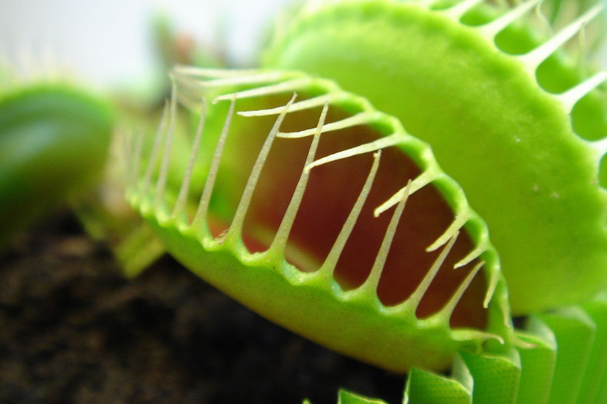

Venus Flytraps
I created this website to describe how small organisms like Venus Flytraps are able to survive as a carnivous species.
There will be two more links that will explain how the Venus Flytrap catches it's prey and the survival conditions that it needs to survive.
<---- These links will be located on the sidebar!

This is what a Venus Flytrap looks like.
Contact Me
Katsuie02342@hotmail.com
Kurtis Situ
3231 East 10th Avenue Vancouver, BC, Canada V9M 2D5
778-706-1081